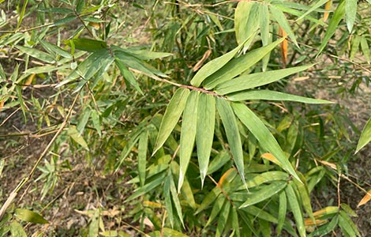
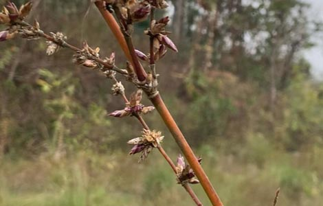
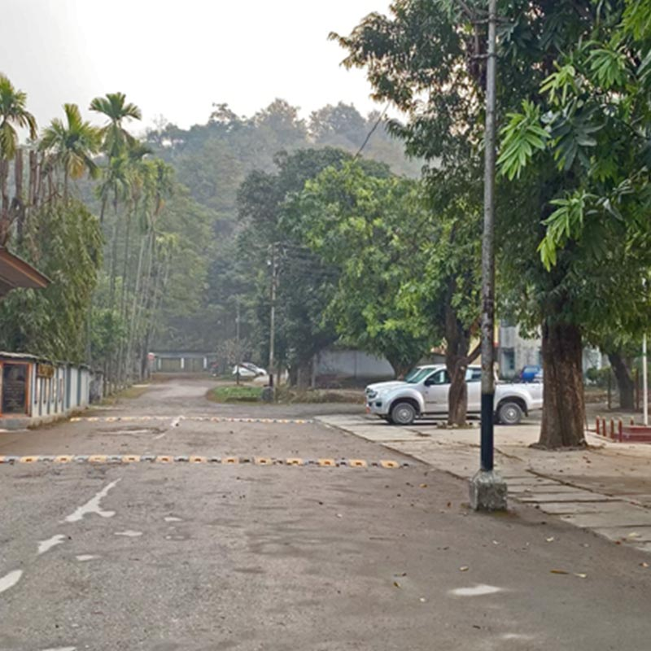
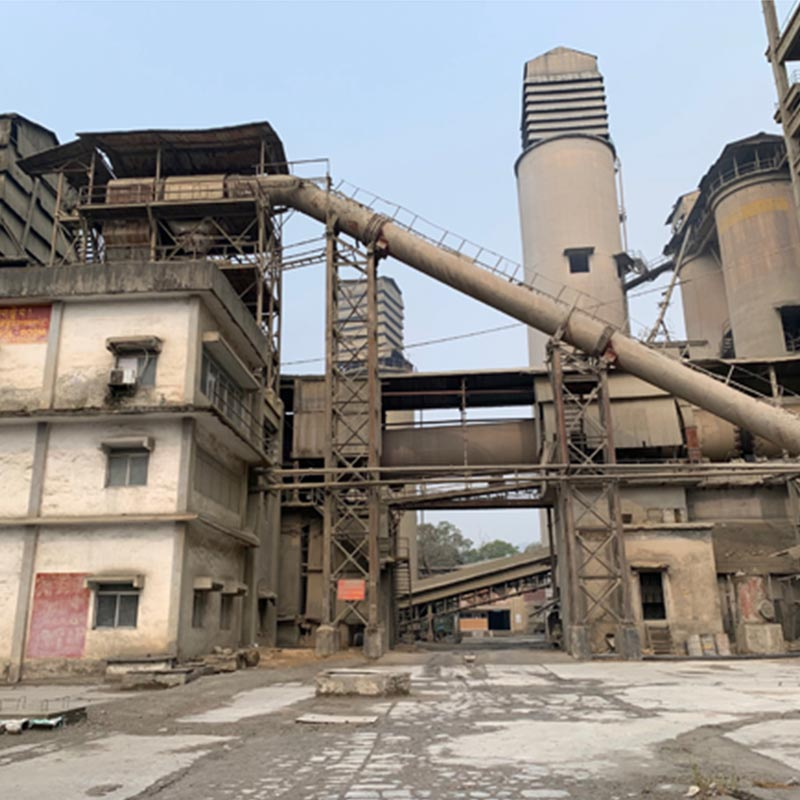
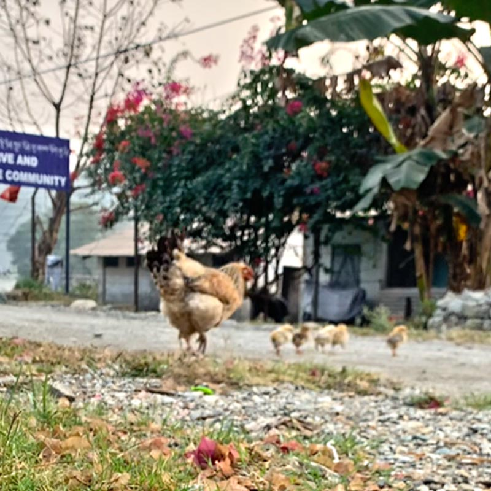
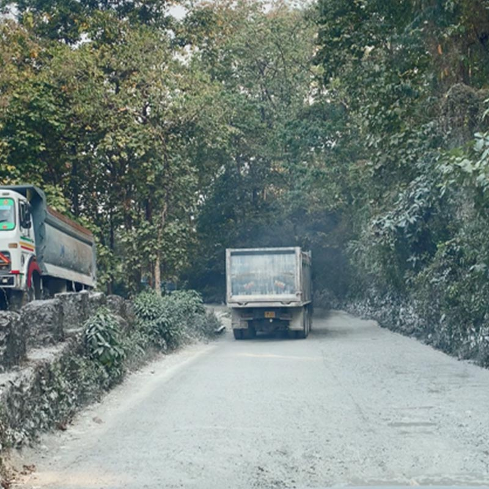

In 2023, Integro conducted an independent information exchange visit to Penden Cement Authority Ltd., in Gomtu, Samtse District, Bhutan — not as a contracted engagement, but as a technical field study, to see what a just transition away from coal actually looks like on the ground.
Penden Cement has been planting Beema Bamboo across its estate — partly to meet government reclamation regulation, partly to reduce its dependence on imported, lower-quality Indian coal, and partly to grow its own biofuel and cut recurring costs. It's a real, if early, attempt at a coal transition happening at plant level, not policy level.
Two Beema Bamboo plantations, on two parts of the same estate.
In Pagli — inside the active mine boundary, but on ground undisturbed by mining — bamboo planted eighteen months ago is healthy and thriving.
In Uttarey — on the closed mine, reclaimed four years ago — bamboo is unhealthy, despite two and a half years' head start.

The difference wasn't time. Something more fundamental explains why the newer planting is outperforming the older one — and it's something we walk mining lessees and policy partners through directly, rather than publish here.

Walking Gomtu made a structural problem visible: the reclamation happening on the mined land, the operating cement plant, and the township where people actually live are effectively three separate worlds, with little connecting them.
Some areas — the police station, sections of the staff quarters — are genuinely green and well kept. Others, closer to the active haul road, show clear stress from dust and traffic — a visible gap between the parts of the estate reclamation has reached and the parts it hasn't.




Here's what it looks like at national scale.